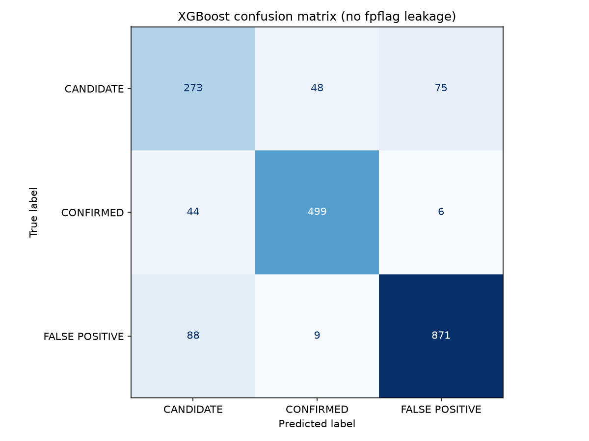
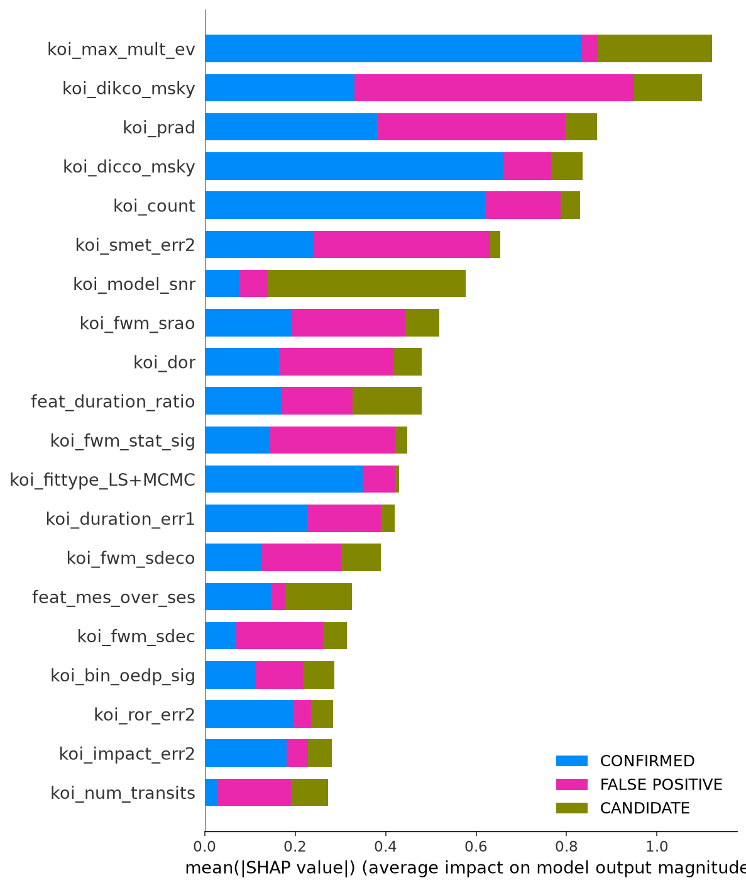
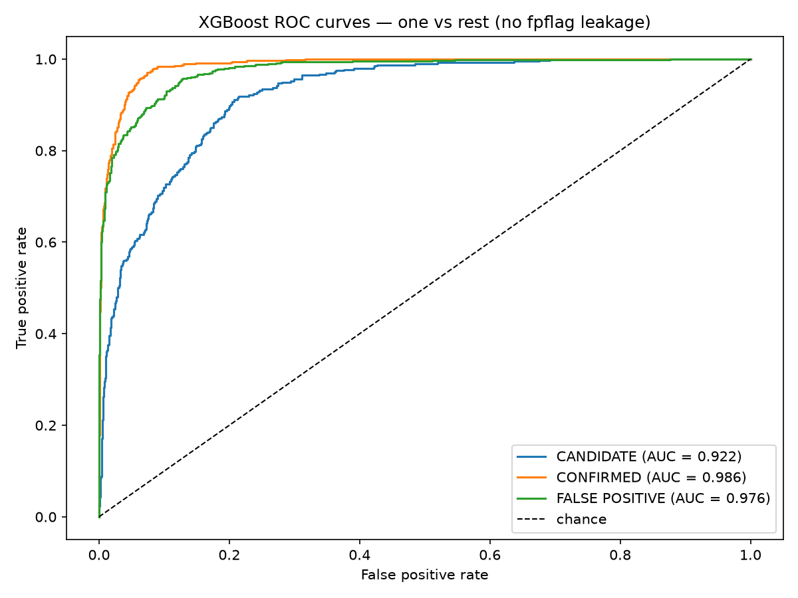
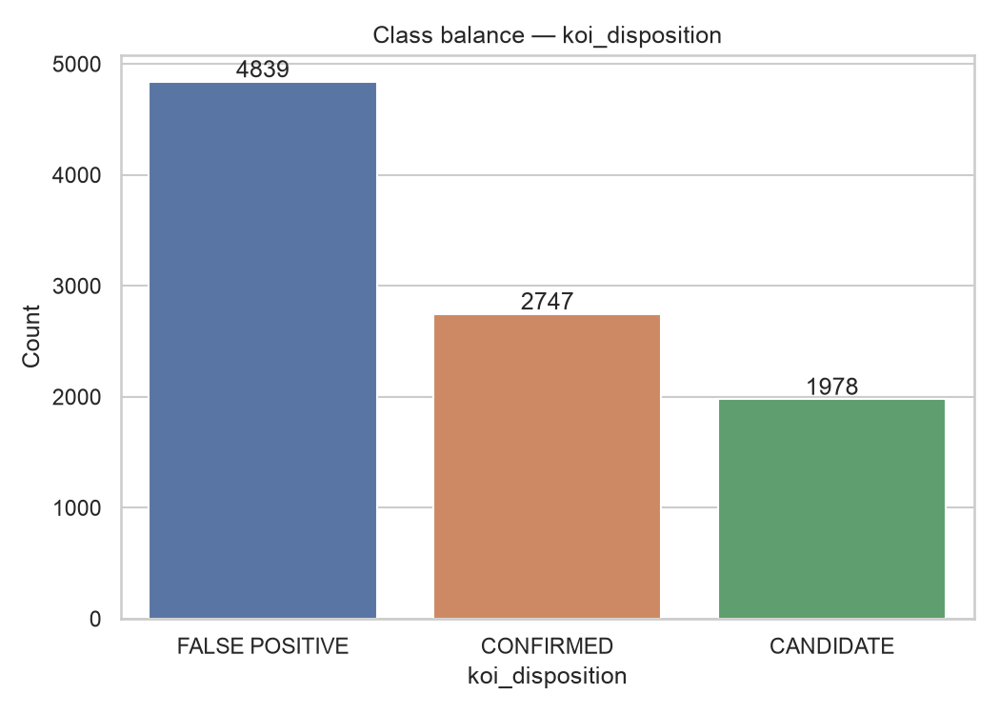
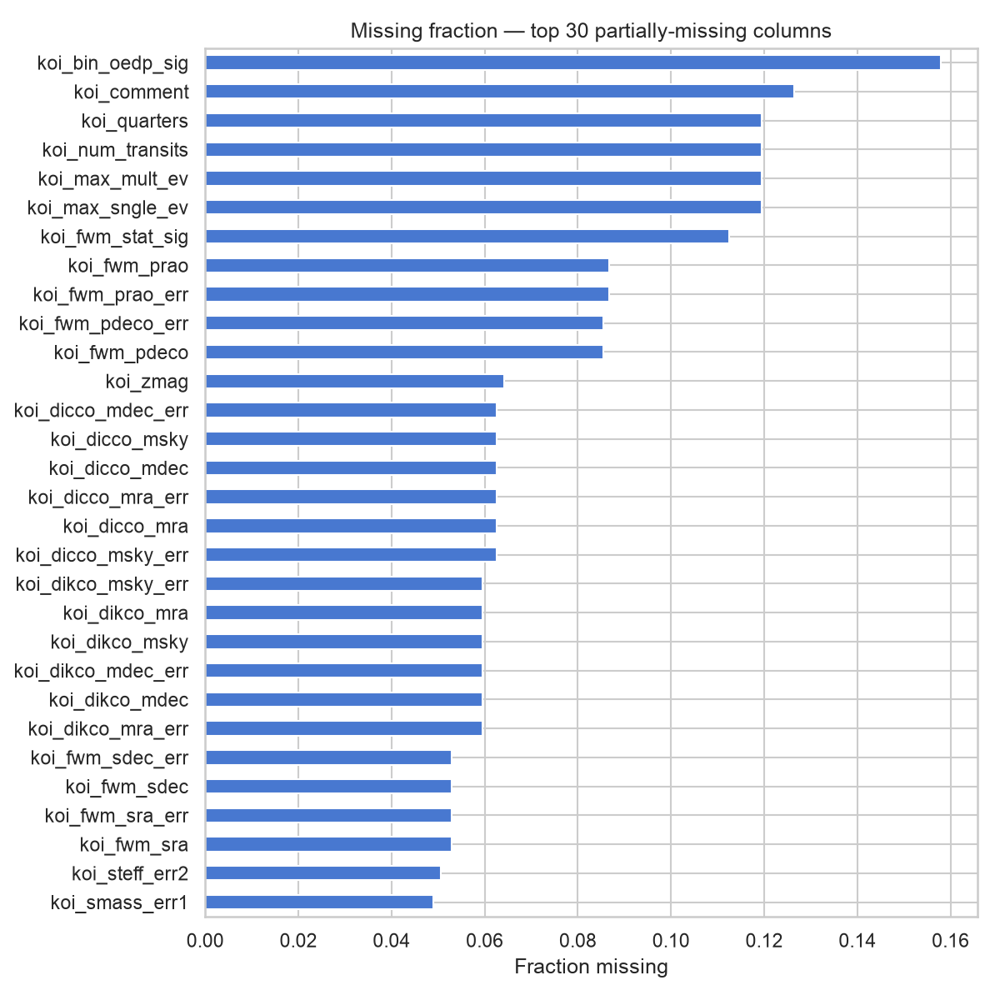

A three-class classifier over all 9,564 Kepler Objects of Interest: confirmed planet, candidate, or false positive. Built on vetting physics, audited for label leakage, and explained prediction-by-prediction with SHAP.
Two notebooks backed by four documented modules in src/. Fixed seeds, pinned dependencies, runs top to bottom.
Profile the raw 9,564 × 140 table: 19 all-null columns dropped, skew and missingness mapped.
koi_pdisposition, kepler_name, vetting comments, status metadata and report links all excluded.
Eight physics-derived features; mirrored _err2 uncertainty twins pruned; medians fit on train split only.
Logistic regression → random forest → XGBoost under stratified 5-fold CV, balanced class weights.
SHAP ranks every prediction's drivers in the same terms astronomers use to vet by hand.
The dataset deliberately omits koi_score, the pipeline's own confidence output. That forced real feature engineering instead of letting one precomputed column do the job.
| Feature | Formula | What it catches |
|---|---|---|
| Depth per hour | \( \mathrm{depth}/\mathrm{duration} \) | Stellar eclipses are deep and sharp; planetary transits shallow and gradual |
| Radius ratio | \( R_p / (109.2\,R_\star) \) | Ratio near 1 means the "planet" is a star \( (1\,R_\odot \approx 109.2\,R_\oplus) \) |
| Event statistic ratio | \( \mathrm{MES}/\mathrm{SES}_{\max} \) | Real transits accumulate evidence across orbits; one-off glitches don't |
| Duration check | observed vs. \( P^{1/3} \) | Kepler's third law scaling; large deviations flag grazing eclipses or blends |
| Log transforms | \( \log_{10} \) period, depth, insolation | These quantities span several orders of magnitude |
| SNR per transit | \( \mathrm{SNR}/N_{\mathrm{transits}} \) | Strong-because-deep vs. strong-because-seen-many-times |
Stratified 5-fold cross-validation on an 80/20 stratified split, seed 42. Macro F1 is the primary metric: classes are imbalanced (51% false positive, 29% confirmed, 21% candidate) and accuracy alone would flatter a model that mostly calls things "false positive."
| Model | Accuracy | Macro F1 |
|---|---|---|
| Logistic regression | 0.916 | 0.888 |
| Random forest | 0.928 | 0.903 |
| XGBoost | 0.942 | 0.922 |
| Data leakage exclusion | Note |
|---|---|
koi_fpflag_* columns excluded — they are NASA vetting pipeline outputs encoding the target classification | |
The four koi_fpflag_* columns are excluded from the feature set — they are outputs of NASA's vetting pipeline and encode the target classification. Using them would be data leakage. The model is trained on transit-physics and stellar-parameter features alone. A 20-configuration randomized hyperparameter search moved CV macro F1 from 0.930 to 0.928 and did not improve the test score, so the near-default configuration is reported rather than a cherry-picked run.
SHAP analysis shows the model relies on genuinely physical features — stellar and planetary parameters that an astronomer would check by hand: geometry, repeatability, signal quality.


koi_dicco_msky, transit SNR, planet radius \( (\gtrsim 2\,R_{\mathrm{Jup}} \) is almost always a small star).


SMOTE-style interpolation on heavy-tailed physical quantities like orbital period can fabricate physically impossible objects. Balanced class weighting keeps every real observation.
Even kepler_name's missingness encodes the label, since names are only assigned to confirmed planets. Going logistic → XGBoost moved macro F1 by 0.034; sloppy leakage handling could have inflated any number past meaning.
The flags ablation (0.922 → 0.830) quantifies exactly how much the model learns from physics versus reading pre-computed hints. Both are published.